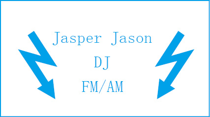

暖身趣味十题
你是文字游戏的高手吗？
（1）请在下面这组字母的开始或结尾添加一个字母，使之变成一个英语单词。注意：不能改变所给字母的顺序。
LYLY
（2）打字机键盘上方第一行的10个字母键是：
Q W E R T Y U I O P
你可以写出一个仅由这10个字母组成的单词吗？
（3）添加三个新字母，将下面这个不完整的单词补充完整。不得改变所给字母的先后次序，也不得在中间插入其他字母。
ONIG
（4）贾斯柏·贾森（Jasper Jason）在当地电台工作。下面是他的名片：

你能发现其中的规律吗？
（5）补全下面这个单词。所给字母必须按给定次序出现在单词之中，且中间不得插入其他字母。这一次我不告诉你需要添加几个字母。
RAOR
（6）趣味问题学者戴维·辛马斯特（David Singmaster）在监考时发现了下面这个结构。出现这么多的“T”，并不是因为笔记本电脑上的“T”键一直被按着。
SENTTTTTTTTTTTTTTTTTTTT
那么，下一个字母是什么？
（7）补全下面这个单词。所给字母必须按给定次序出现在单词之中，且中间不得插入其他字母。
HQ
（8）下列单词的共同点是什么？
Assess
Banana
Dresser
Grammar
Potato
Revive
Uneven
Voodoo
（9）补全下面的单词。所给字母必须按给定次序出现在单词之中，且中间不得插入其他字母。
TANTAN
（10）要补全下面这个字母串，应该在最后添加哪个字母？
O U E H R A